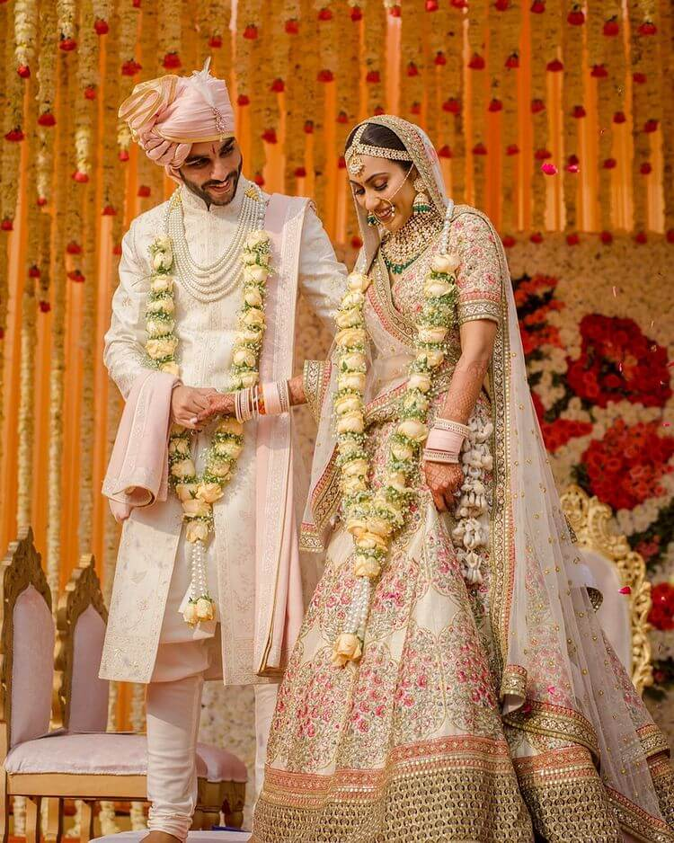
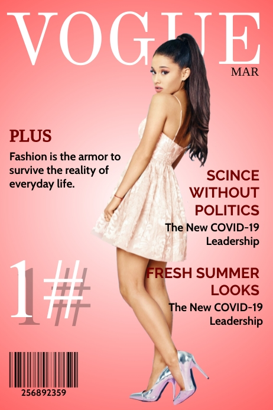

Wedding Photography
We create Memories that last Forever.
Portfolio Shoot

We love to capture beauty, Emotions and Magic moments from your events.
Magazine shoot
Photography is Story, we fail to put into words.
Event shoots
Photography is the art of making memories tangible.